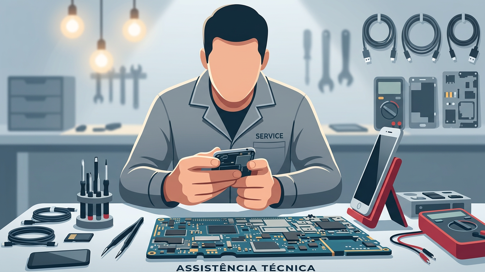

BYTE
Fundada em julho de 2026 por João Victor Novo dos Santos, a BYTE nasceu da paixão pela tecnologia e da percepção de que o mercado de assistência técnica precisava de um serviço renovado: transparente, moderno e focado na real necessidade do cliente.
Na BYTE, transformamos problemas tecnológicos em soluções ágeis e eficientes. Especializada em manutenção, diagnóstico e suporte técnico, combinamos conhecimento especializado, equipamentos de ponta e um atendimento humanizado para garantir que seus dispositivos voltem a funcionar com o máximo de desempenho e segurança.
